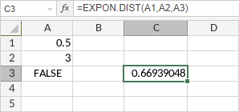

EXPON.DIST funkcija
EXPON.DIST funkcija je jedna od statističkih funkcija. Koristi se za vraćanje eksponencijalne distribucije.
Sintaksa
EXPON.DIST(x, lambda, kumulativno)
EXPON.DIST funkcija ima sledeće argumente:
| Argument | Opis |
|---|---|
| x | Vrednost funkcije, numerička vrednost veća ili jednaka 0. |
| lambda | Parametar vrednosti, numerička vrednost veća od 0. |
| kumulativno | Logička vrednost (TRUE ili FALSE) koja određuje oblik funkcije. Ako je kumulativno TRUE, funkcija vraća kumulativnu distribucionu funkciju; ako je FALSE, vraća funkciju gustine verovatnoće. |
Napomene
Kako primeniti EXPON.DIST funkciju.
Primeri
Slika ispod prikazuje rezultat koji vraća EXPON.DIST funkcija.
